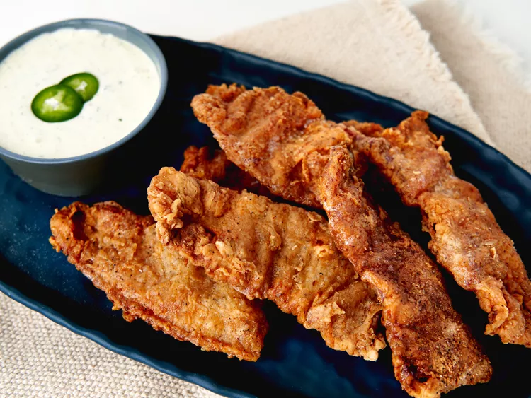

Chicken Fried Bacon

Description
Chicken fried bacon is breaded with seasoned flour and deep-fried until golden and crispy. Serve it with ranch dressing for dipping.
Ingredients
- ⅓ cup ranch dressing, plus more for dipping, if desired
- 1 teaspoon hot chile paste
- 4 skinless, boneless chicken breasts, cut into 1-inch cubes
- 24 (1-inch) pieces red onion
- 12 slices thick-cut bacon
- salt and black pepper, to taste
- 12 (6-inch) bamboo skewers, soaked in water for 2 hours
Steps
- Line a rimmed baking sheet with paper towels and set a wire rack inside.
- Heat oil in a large deep skillet or Dutch oven over medium heat to 350 degrees F (175 degrees C). Meanwhile, cut bacon in half crosswise and season evenly on both sides with multi-purpose seasoning.
- Whisk together flour, salt, pepper, and paprika in a shallow bowl. Alternatively, season flour with additional multi-purpose seasoning blend. Whisk eggs, beer, and syrup together in a separate shallow bowl.
- Coat each piece of bacon lightly in seasoned flour. Then coat in egg mixture, allowing the excess to drip off. Coat once more in flour mixture; set aside until all pieces are coated and oil is hot.
- Working a few pieces at a time, fry each piece in hot oil, flipping occasionally, until crispy golden brown, 4 to 5 minutes. Maintain the oil temperature between 330 and 350 degrees F (165 to 175 degrees C) while cooking. Drain bacon on the prepared wire rack. Repeat with remaining bacon.
- Serve with ranch dressing for dipping.